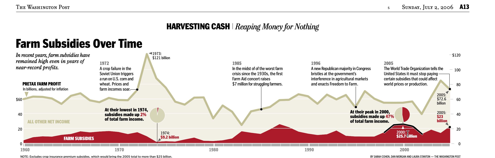
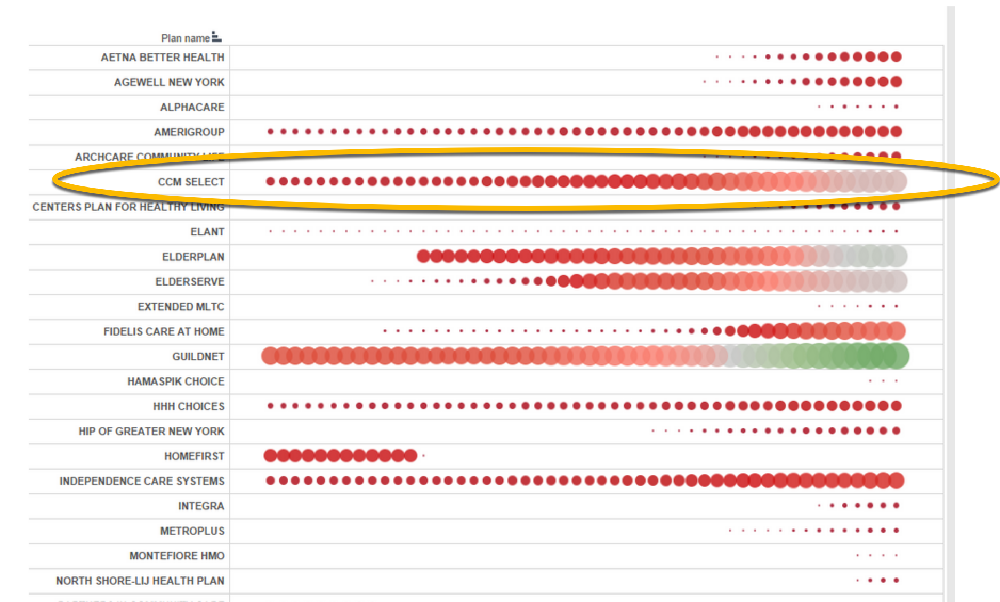
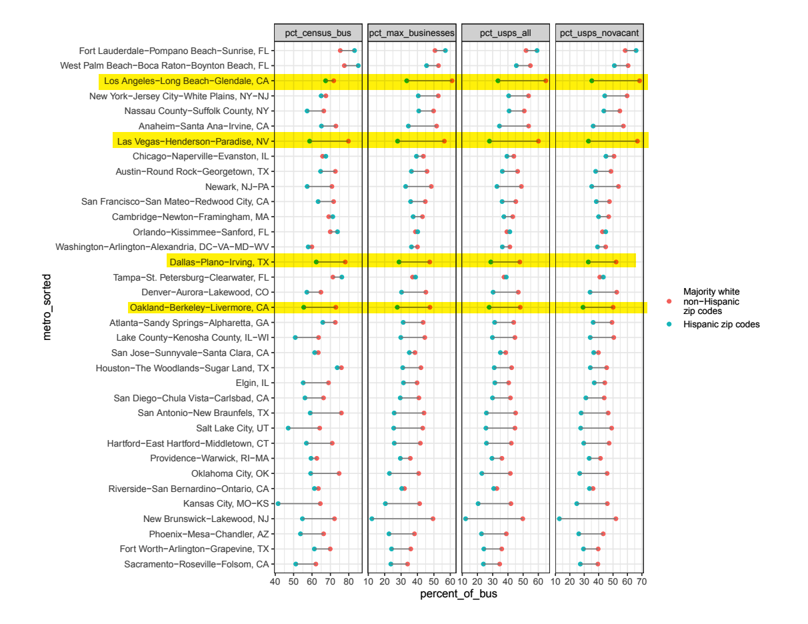
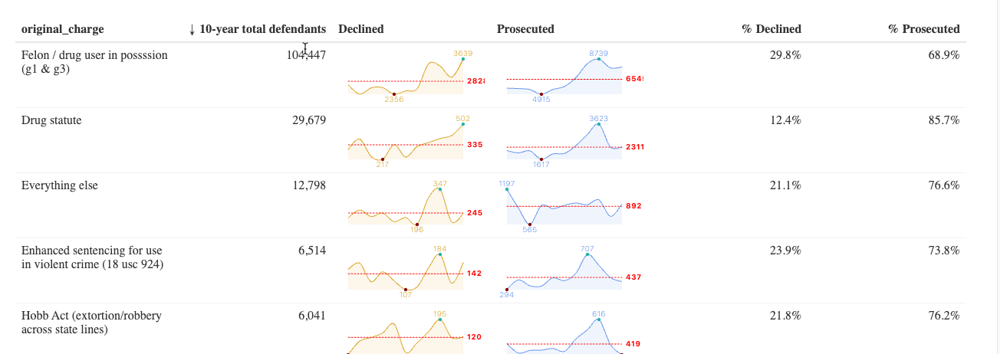
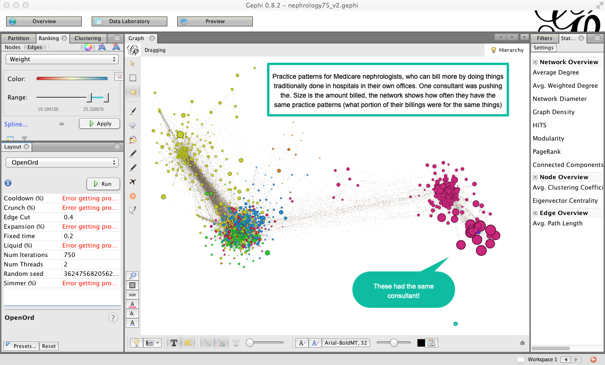
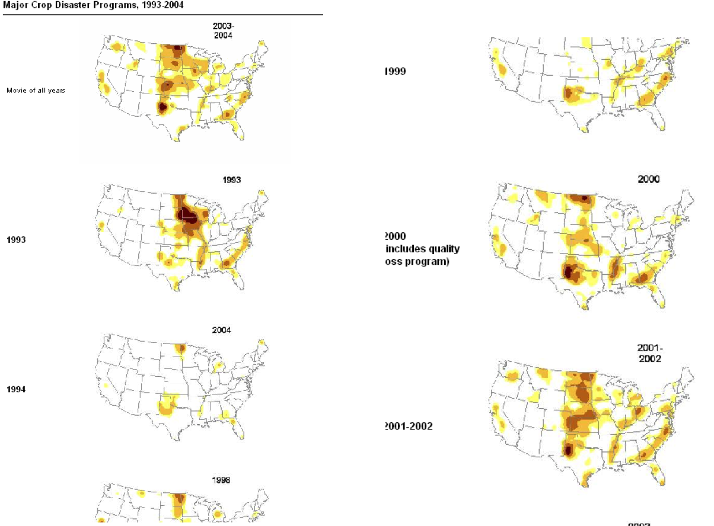

22 Visualization as a reporting tool
This chapter is an introduction to using visualization in a very specific way: To improve your reporting and work with colleagues. It ignores the elements that are important for publication, such as scalability, clarity of labels and font / color combinations.
Reporters use visualization methods to:
- Find outliers and holes in your data that you might miss using other methods.
- Link time and place to find compelling reporting targets
- Link organizations, events and people in proper chronological order
- Reveal scale and proportion at the same time – very difficult in tables of numbers.
Visualization for reporting is our version of the “exploratory data analysis” process used in data science and statistics. Using this method, we worry less about communicating our findings , and more about discovering patterns or story ideas. The purpose is to learn more, not to communicate a point.
Some differences between exploratory visualization and viz for publication include:
- You may never show your exporatory work to anyone. They’re more like notes, which might be used for only a few minutes.
- Communication takes extreme care with color palettes, accessibility issues and typography. They are annotated and clearly labeled.
- Publication graphics tell a story you’ve already discovered. Exploratory graphics uncover stories you might have missed.
- Breaking some of the rules used to avoid misleading readers, can show patterns or a lack of it in that are worth reporting out.
- You can’t write around missing or bad data in publication ; use exploration to find holes in the data for reporting.
Getting started sometimes means just putting in a visual form the notes you’ve already taken. Consider this graphic, which ran in the Washington Post in 2006:

It shows the portion of farm income associated with subsidies and key events over the past 45 years, and was built over a series of months. Finding data that could be used over time with similar definitions and similar meanings was a challenge. Investigating all of the peaks and troughs helped us keep context in mind as we did the rest of our reporting. It also meant that one chore was pretty much finished before the stories were written.
22.1 Examples
Size and growth at once
This graphic was used for less than five minutes, but helped us see that there was one company that would be a good candidate for further reporting. The details are unimportant, but it showed that this company began quite small and grew quite quickly — the characteristic we were seeking. The others were not as strong candidates.

Reviewing two data points in a long list

This graphic shows the difference between the percent of businesses that got PPP loans in majority Latino zip codes compared to majority white non-Hispanic, based on four different measures. We used it at Reveal to identify places that might be the right place for a story – those where, across a series of measures, the difference was noticable, and the number of loans was large enough to warrant investigating. The team decided to center the story in Los Angeles, though it also reported on Dallas.
Text with graphics
Looking at a table of numbers is mind-numbing. It’s hard to pick out what’s important. Some of the most imaginative visualizations come in the form of tables. In fact, there’s even a contest among R users to build the best tables. 1
One simple example is this analysis of federal prosecutions of gun charges over three administrations. We were curious: which statutes are the ones that Joe Biden is prioritizing compared with previous administrations? And was there a major downturn in prosecutions during the pandemic? These “sparklines” on the data table help show the trends, even when the numbers themselves are very different:

Networks of companies, people or programs
This is an example of a network analysis of Medicare charges among nephrologists – kidney doctors. We had heard that one consultant was showing doctors how to do procedures in their offices that were traditionally done in hospitals. The procedures had unusually high billing rates in doctors’ offices, but very low ones in hospital settings. These networks looked at the similarity across doctors’ practices by comparing the proportions of billing codes, then clustering them when they matched about 75 percent of the time. The area of red, large circles on the right turned out to be the same consulting practice. Sadly, the reporter who worked on this tip left the paper before we had a chance to publish.

22.2 Tips for exploratory visualizations
Use small multiples to quickly orient yourself in a large dataset
“Small multiples” are repeated images, usually over time or place. This example shows where each round of agricultural disaster payments went, which helped us decide on where to focus our reporting – Kansas and North Dakota.

Look at your data from all directions
When you’re trying to understand a story or a dataset, there’s no wrong way to look at it; try it every way you can think of, and you’ll get a different perspective. If you’re reporting on crime, you might look at one set of charts with change in violent crimes in a year; another might be the percent change; the other might be a comparison to other cities; and another might be a change over time. Use raw numbers, percentages and indexes.
Look at them on different scales. Try following the rule that the x-axis must be zero. Then break that rule and see if you learn more. Try out logarithms and square roots for data with odd distributions.
Keep in mind the research done on visual perception. William Cleveland’s experiments showed that the eye sees change in an image when the average slope is about 45 degrees. This suggests you ignore the admonitions to always start at zero and instead work toward the most insightful graphic. Other research in epidemiology has suggested you find a target level as a boundary for your chart. Each of these ways helps you see the data in different ways. When they’ve stopped telling you anything new, you know you’re done.
Don’t assume
Now that you’ve looked at your data a variety of ways, you’ve probably found records that don’t seem right – you may not understand what they meant in the first place, or there are some outliers that seem like they are typos, or there are trends that seem backwards.
If you want to publish anything based on your early exploration or in a published visualization, you have to resolve these questions and you can’t make assumptions. They’re either interesting stories or mistakes; interesting challenges to common wisdom or misunderstanding.
It’s not unusual for local governments to provide spreadsheets filled with errors, and it’s also easy to misunderstand government jargon in a dataset.
First, walk back your own work. Have you read the documentation, its caveats and does the problem exist in the original version of the data? If everything on your end seems right, then it’s time to pick up the phone. You’re going to have to get it resolved if you plan to use it, so you might as well get started now.
That said, not every mistake is important. In campaign finance records, it’s common to have several hundred postal codes that don’t exist in a database of 100,000 records. As long as they’re not all in the same city or within a candidate, the occasional bad data record just doesn’t matter.
Ask yourself: if I were to use this, would readers have a fundamentally accurate view of what the data says?
Avoid obsessiong over precision and presentation details
The flip side of not asking enough questions is obsessing over precision before it matters. Your exploratory graphics should be generally correct, but don’t worry if you have various levels of rounding, if they don’t add up to exactly 100 percent or if you are missing one or two years’ data out of 20. This is part of the exploration process. You’ll still see the big trends and know what you have to collect before it’s time for publication.
In fact, you might consider taking away labeling and scale markers, much like the charts above, to even better get an overall sense of the data.
Create chronologies of cases and events
At the start of any complex story, begin building chronologies of key events and cases. These are easily done in a spreadsheet or a data collection system like Airtable. You will eventually need one.
Meet with designers and graphics editors early and often
Brainstorm about possible graphics with the artists and designers in your newsroom. They will have good ways to look at your data, suggestions of how it might work interactively, and know how to connect data and stories. It will make your reporting much easier if you know what you have to collect early on, or if you can alert your team that a graphic isn’t possible when you can’t collect it.
These are painstakingly built and are meant for publication, but you can see how much they can convey using color, size, shape and other elements within a table of numbers.↩︎